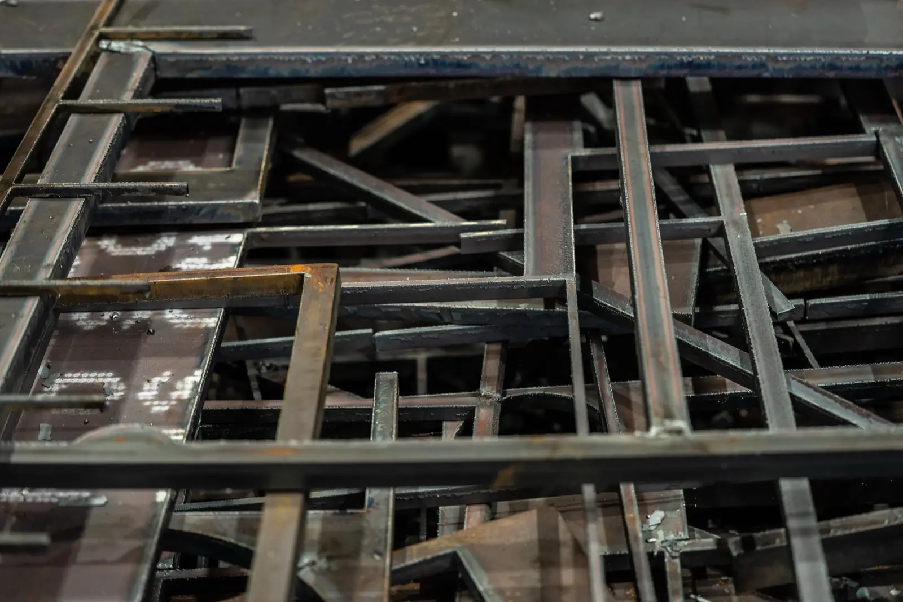
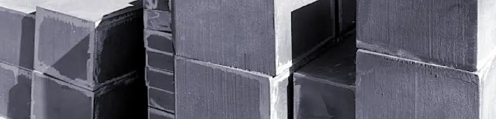
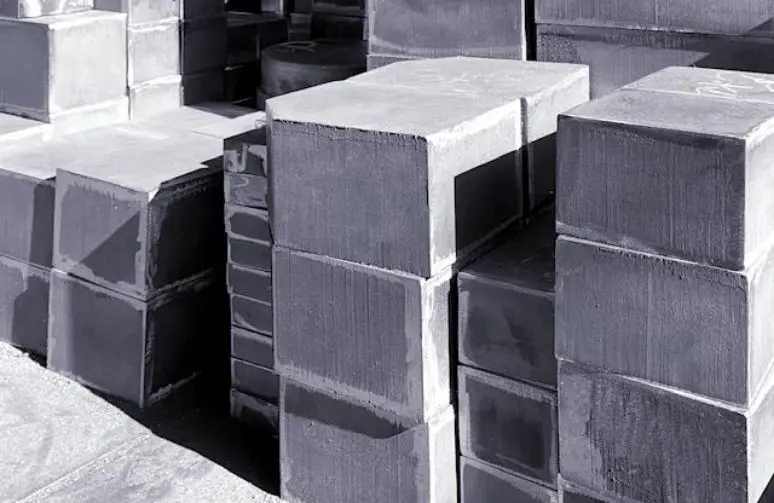
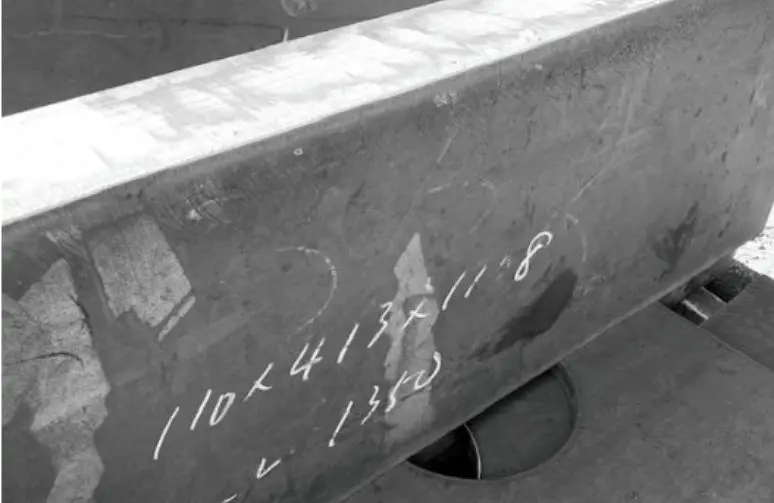
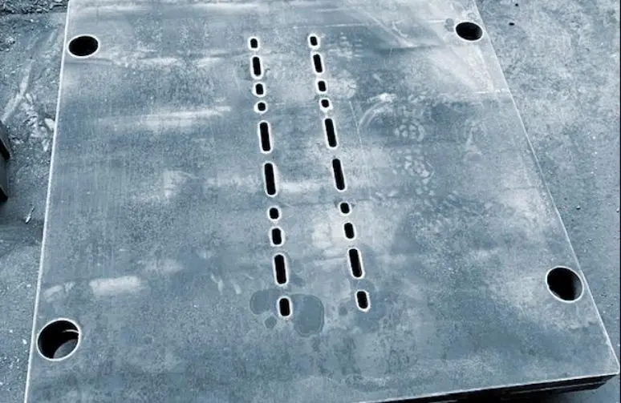
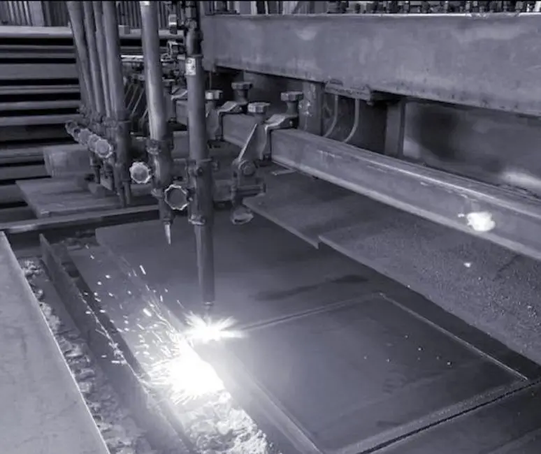
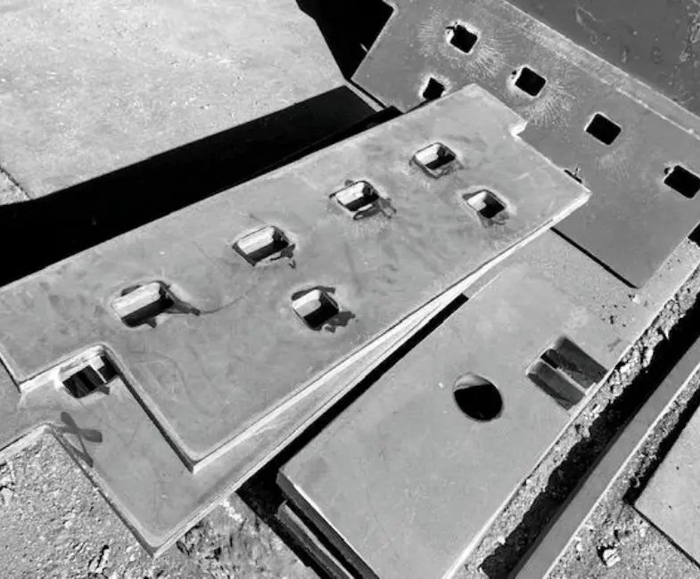
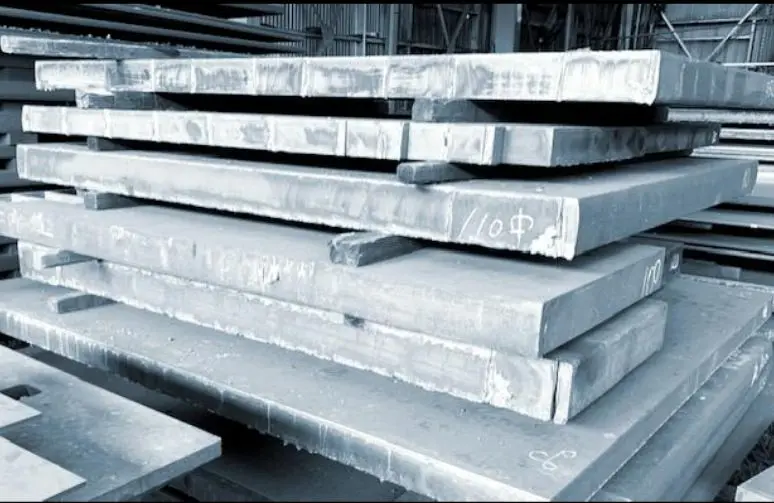
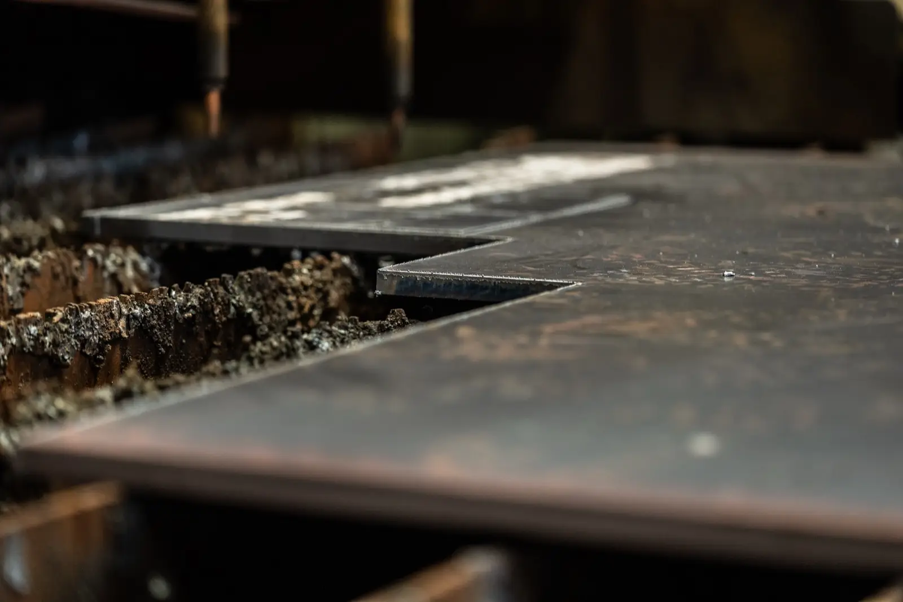

Gallery
加工例









最後の2枚は9/30撮影の追加候補。現行の白黒写真のカラー原本の有無と、追加写真の掲載可否を確認
同様の加工のご相談・お見積りはお気軽に
板厚・サイズ・数量をお知らせいただければ迅速にお見積りします。図面はFAX（03-3656-1116）・メール添付でもOKです。
鋼材図鑑
加工例で使用している鋼材の規格・特性は、鋼材図鑑で確認できます。板厚や用途に合う鋼種を調べる際にもご利用ください。 鋼材図鑑へ →
Cases
実際のご相談と解決例
実際にいただいたご依頼の一部をご紹介します。どんなご相談でもまずはお気軽にお問い合わせください。
機械修理に必要な厚板が明日の朝までに欲しい
製造業のお客様から当日午後に緊急のご連絡。在庫から即日ピックアップし、翌朝の現場に間に合わせました。通常の発注ルートでは間に合わない場合も、まずはご相談ください。
結果：当日手配・翌朝納品で機械修理に間に合いました
図面通りの寸法で鋼材を切断・納品してほしい
建設会社様より複雑な形状の切断依頼。寸法図をFAXでお送りいただき、SS400・40mm厚をガス溶断で対応。精度±1〜2mmで仕上げ、工期に間に合わせました。
結果：図面通りに溶断・精度±1〜2mm内で納品完了
店で使う鉄板を、厚みにこだわって作ってほしい
ハンバーグレストラン様からのご依頼。ご希望のサイズ・板厚をヒアリングし、オーダーメイドで製作・納品しました。厚板の蓄熱性を活かした、店舗仕様の鉄板です。
結果：厚さ9mm・カスタムサイズの店舗用鉄板を製作
1枚だけ欲しいと言ったら他社に断られてしまった
「まとめてでないと対応できない」と他社に断られたお客様からのご相談。弊社は1枚からご注文いただけます。必要な分だけを適切なサイズに切断してお届けしました。
結果：1枚・ご希望サイズに切断して納品しました
ミルシート（鋼材検査証明書）も一緒に欲しい
元請様への提出用に材質証明が必要なお客様からのご依頼。ご注文時にお申し付けいただき、SS400切板にミルシートを添付して納品しました。後からのご依頼も可能ですが、事前のお申し付けがスムーズです。
結果：切板にミルシートを添付して納品完了
FAQ
よくあるご質問
見積りを依頼するとき、何を伝えれば良いですか？
板厚・幅・長さ（mm）・数量をお伝えいただければスムーズです。材質がわからない場合は用途を教えていただければご提案します。図面がある場合はFAX（03-3656-1116）またはメール添付でお送りください。
どのくらいで納品できますか？
在庫品は、平日12時までにご注文が確定した場合、当日出荷が可能です。通常のガス切断品は、ご注文後1〜2営業日で出荷します。在庫状況・数量・加工内容・配送条件により異なりますので、お急ぎの場合は事前にご相談ください。
Contact
板厚・寸法・数量
だけでも
お見積りできます。
図面がある場合はFAX（03-3656-1116）・メール添付でお送りください。1枚からご相談歓迎です。